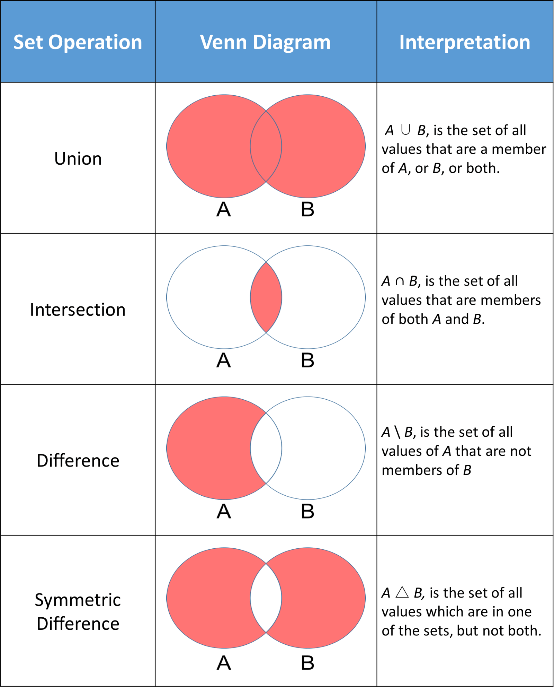

样本空间与概率
Contents
统计与大数据分析
样本空间与概率1
肖朦，2023
样本空间与概率#
问题#
某种疾病在人群中的患病率是0.1%。
若患病，检测为阳性的的概率是95%。
若未患病，检测为阴性的概率是95%。
现一人检测出阳性，他患病的概率是？
教材#
概率导论，Dimitri P.Bertsekas，John N.Tsitsiklis 著，郑忠国，童行伟 译，图灵出品
集合#
一群研究对象放在一起，形成集合S，研究对象：元素x, \(x \in S\)
若x不是S的元素，\( x \notin S\)
空集:没有元素，\(\emptyset\)
有限元素 \(S =\{ x_1,x_2, \cdots, x_n \}\)
无限元素 \(S =\{ x_1,x_2, \cdots \}\)
具有某种性质P为条件的集合 \(S =\{ x | x满足P \}\), 例如{x| 0< x <1}
集合S所有元素都是集合T的元素，则S是T的子集， \(S\subset T\)，或者\( T \supset S\)
空间\(\Omega\)，所有元素的集合
集合运算#
补集：\(\{ x \in \Omega | x \notin S\}\), 集合S相对于\(\Omega\)的补集，\(S^c\)
并集：\(S \cup T = \{x | x \in S\ 或\ x \in T\}\)
交集：\(S \cap T = \{x | x \in S\ 且\ x \in T\}\)
多个集合的并和交：
\( \cup_{n=1}^{\infty} S_n = S_1 \cup S_2 \cdots = \{x|x\in S_n对某个n成立\}\)
\( \cap_{n=1}^{\infty} S_n = S_1 \cap S_2 \cdots = \{x|x\in S_n对所有n成立\}\)
韦恩图：直观理解集合

集合的代数#
\(S\cup T = T \cup S\)
\(S\cup (T \cup U) = (S\cup T)\cup U\)
\(S\cap (T \cup U) = (S\cap T)\cup (S\cap U)\)
\(S\cup (T \cap U) = (S\cup T)\cap (S\cup U)\)
\((S^c)^c =S, S \cap S^c = \emptyset\)
from matplotlib_venn import venn3
import matplotlib.pyplot as plt
set1 = {1,2,3} ## 等同于 set1=set((1,2,3))
set2 = {2,3,4}
set3 = {3,4,5}
# Use the venn3 function
venn3([set1,set2,set3], ('set1', 'set2','set3'))
plt.show()
/usr/local/anaconda3/envs/py39/lib/python3.9/site-packages/matplotlib_venn/_venn3.py:117: UserWarning: Bad circle positioning
warnings.warn("Bad circle positioning")

set1.update((5,))
print(set1)
set1.update((1,))
print(set1)
set1.remove(5)
print(set1)
{1, 2, 3, 5}
{1, 2, 3, 5}
{1, 2, 3}
请chatGPT用十个形容词形容以下生物
小狗 = {'可爱的', '忠诚的', '活泼的', '聪明的', '爱玩的', '友善的', '快乐的', '顽皮的', '温柔的', '陪伴的'}
婴儿 = {'可爱的', '温柔的', '活泼的', '天真的', '纯洁的', '无邪的', '善良的', '纯真的', '懵懂的', '神奇的'}
大学生 = {'好学的', '积极的', '奋斗的', '聪明的', '创造性的', '责任感强的', '多才多艺的', '独立的', '好奇的', '社交能力强的'}
venn3([小狗,婴儿,大学生],('Dog','Baby','College Student'))
plt.show()
请chatGPT用30个形容词形容以下生物
小狗 = {'可爱的', '忠诚的', '活泼的', '聪明的', '友好的', '温柔的', '顽皮的', '机灵的', '热情的', '警惕的', '勇敢的', '灵巧的', '快乐的', '温顺的', '活力四溢的', '善解人意的', '胆小的', '顺从的', '敏捷的', '善良的', '天真的', '顾家的', '忠心的', '聪慧的', '好奇的', '俏皮的', '无畏的', '忍耐的', '顺利的', '乖巧的', '懂事的'}
婴儿 = {'可爱的', '天真的', '无忧无虑的', '天使般的', '活泼的', '灿烂的', '稚嫩的', '纯真的', '温柔的', '乖巧的', '机灵的', '聪明的', '好奇的', '快乐的', '温暖的', '甜美的', '娇嫩的', '宝贝般的', '天真无邪的', '亲切的', '可亲的', '天生的', '俏皮的', '淘气的', '活力四溢的', '天使般的', '小巧玲珑的', '善解人意的', '顺从的', '宝贝般的', '乖巧的'}
大学生 = {'聪明的', '勤奋的', '积极的', '有活力的', '独立的', '自信的', '成熟的', '创新的', '担当的', '乐观的', '进取的', '激情的', '有才华的', '有责任心的', '热情洋溢的', '开朗的', '好学的', '善于沟通的', '团结的', '有组织能力的', '有领导才能的', '有创造力的', '有决策能力的', '适应能力强的', '有合作精神的', '有追求卓越的', '具有社交能力的', '富有同理心的', '注重个人发展的', '有人际关系的'}
venn3([小狗,婴儿,大学生],('Dog','Baby','College Student'))
plt.show()
Python中的集合运算#
{kind=link}
set1 = {1,2,3} ## 等同于 set1=set((1,2,3))
set2 = {2,3,4}
set3 = {3,4,5}
set1.union(set2)
set1|set2
{1, 2, 3, 4}
set1.intersection(set2)
set1 & set2
{2, 3}
set1.difference(set2)
set1-set2
{1}
set2.symmetric_difference(set1)
set2^set1
{1, 4}
set1 = {1,2,3}
set2 = {2,3,4}
print(set1)
## 并集，改变set1的值, union
set1.update( set2)
print(set1)
## 交集，改变set1的值, intersection
set1 &= set2
print(set1)
{1, 2, 3}
{1, 2, 3, 4}
{2, 3, 4}
set1 = {1,2,3}
set2 = {2,3,4}
## set1中去掉与set2相同的值, difference
set1 -= set2
print(set1)
{1}
set1 = {1,2,3}
set2 = {2,3,4}
## 只在set1或set2中的值，symmetric_difference
set1 ^= set2
print(set1)
{1, 4}
小狗 & 婴儿 & 大学生
{'聪明的'}
概率模型#
概率模型的构成
样本空间：一个试验所有可能的结果
概率律：试验结果的集合A，概率非负数P(A)
样本空间：不能遗漏任何结果
例子：抛10次硬币
例1：每出现1次正面朝上，赢1元
例2：每次赢1元，每次遇到正面朝上，每次赢得的钱翻倍
赢得的总额
例1：[0,10]的数列,样本11
例2：[正/反，….,正/反]的序列，样本2^10
概率律#
概率公理
非负性，P(A) >0
可加性，若A,B不相交，\(P(A \cup B) = P(A) + P(B)\)
归一化，整个样本空间的总概率为1，\(P(\Omega)\)=1
概率P(A)是什么？
大量可重复实验中A出现的频率
主观判断：明天是否下雨，哪支球队赢得比赛胜利
离散模型#
离散模型：样本空间有限个元素
事件A={\(s_1,s_2,\cdots,s_n\)}的概率是其包含的试验结果概率之和
均匀概率律#
若样本空间每个试验结果是等概率的，则
例：连续两次掷有4个面的骰子
P（{两次点数和为偶}）= 1/2
P（{两次点数相同}）= 1/4
P（{第一次比第二次点数大}）= 3/8
P（{至少一次点数为4}）= 7/16
Python 列举试验结果，计算概率#
## 穷举所有排列
import itertools
import numpy as np
import collections
x=np.arange(1,5)
print(x)
[1 2 3 4]
y = list(itertools.product(x,x))
print(y)
print("Number of possible results = ",len(y))
[(1, 1), (1, 2), (1, 3), (1, 4), (2, 1), (2, 2), (2, 3), (2, 4), (3, 1), (3, 2), (3, 3), (3, 4), (4, 1), (4, 2), (4, 3), (4, 4)]
Number of possible results = 16
collections.Counter( sum(i)%2==0 for i in y ) ## 两次和为偶数/奇数, 1/2
Counter({True: 8, False: 8})
collections.Counter( i[0]>i[1] for i in y ) ## 第一次比第二次大, 3/8
Counter({False: 10, True: 6})
collections.Counter( i[0]==4 or i[1]==4 for i in y ) ## 至少一次为4, 7/16
Counter({False: 9, True: 7})
collections.Counter( i[0]==4 or i[1]==4 for i in y )[True] ## 至少一次为4, 7/16
7
Python离散随机数产生#
import numpy as np
##在0到4中随机产生一个整数
x = np.random.randint(4)
x
0
for i in range(5):
x = np.random.randint(4)
print(x)
3
2
2
2
3
np.random.seed(23)
for i in range(5):
x = np.random.randint(4)
print(x)
3
2
0
1
2
x = np.random.randint(1,5,size=(2,5))
print(x)
[[1 4 2 1 4]
[4 3 2 4 3]]
例：连续两次掷有4个面的骰子
sample=1000
x = np.random.randint(1,5,size=(2,sample))
print(x)
[[4 2 1 ... 4 1 4]
[2 2 4 ... 1 2 3]]
import seaborn as sns
import matplotlib.pyplot as plt
f, axs = plt.subplots(1,2)
sns.histplot(x[0],stat='probability',ax=axs[0])
sns.histplot(x[1],stat='probability',ax=axs[1])
<AxesSubplot:ylabel='Probability'>
import collections
## P（{两次点数和为偶}）= 1/2
counter = collections.Counter((x[0]+x[1])%2==0)
print(counter)
print(counter[True])
Counter({False: 512, True: 488})
488
## P（{两次点数相同}）= 1/4
## P（{第一次比第二次点数大}）= 3/8
## P（{至少一次点数为4}）= 7/16
counter1 = collections.Counter(x[0]==x[1])
counter2 = collections.Counter(x[0]>x[1])
y = np.random.randint(1,5,size=(sample,2))
counter3 = sum([4 in k for k in y])
print("随机实验得到P=",counter1[True]/sample,counter2[True]/sample,counter3/sample)
print("理论计算得到P=",1/4,3/8,7/16)
随机实验得到P= 0.231 0.373 0.425
理论计算得到P= 0.25 0.375 0.4375